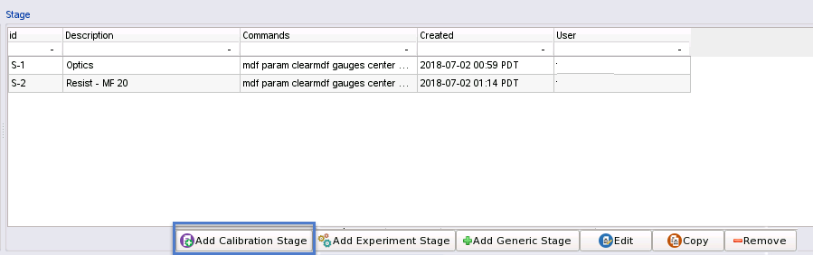
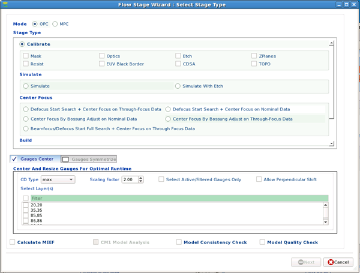
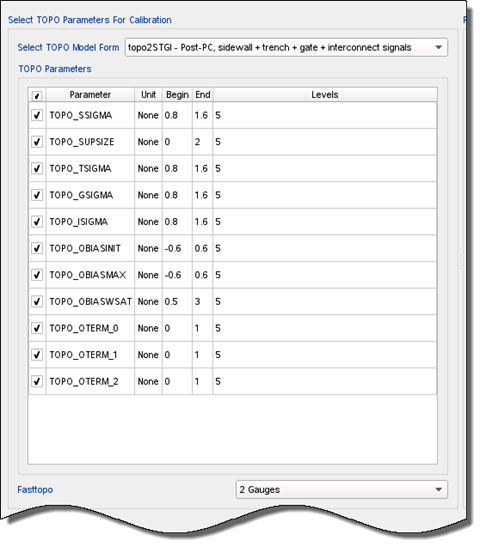
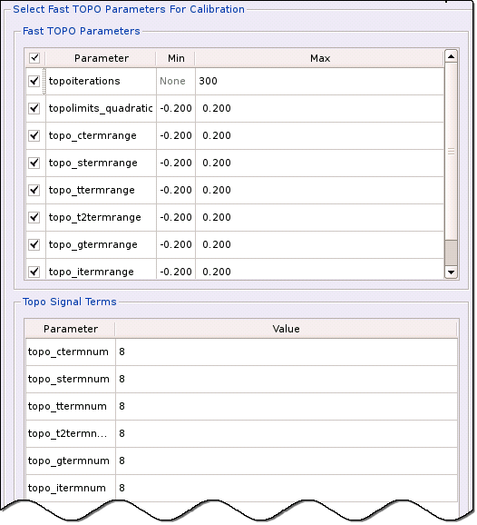
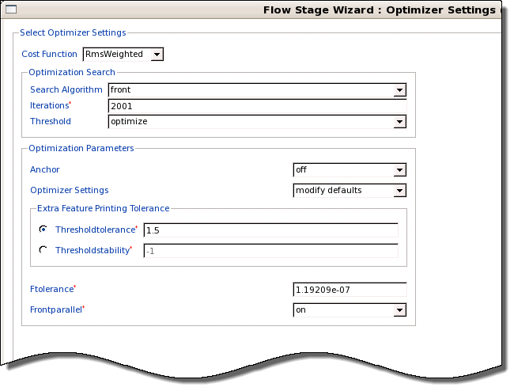

The topo model is calibrated as a separate
stage from the optical and resist models.
Procedure
- Raise the Database
Browser tab in the list of primary display tabs.

- Click Stage in
the left column.
- Click the Add Using
Wizard button.

- Choose
TOPO in the Select Stage Type page, then click Next.

The Calibration page populates its parameters based
on the modelform you select on the first page (Figure 1).
- Use the
Select Topo Model Form dropdown to ensure that your selection matches
your topo model inside the litho model. In most cases, you can leave
the default calibration parameters at the defaults; adjust parameters
as needed and click Next.
Tip Choosing
“Active Input Lithomodel” uses the loaded litho model if you activated
one, or if you created a custom litho model. (See “Editing an Existing Topo Model”.).
Figure 1. Topo Calibration
Parameters (Page 1 - Outer Loop)
Note: On page 1, the oxide bias parameters (TOPO_OBIAS_INIT,
TOPO_OBIASMAX, TOPO_OBIASWSAT, TOPO_OTERM_0, TOPO_OTERM_1, and TOPO_OTERM_2) always
appear regardless of the TOPO Model Form you select, and should
always be calibrated.
- Use the
controls on the second page (Figure 2) to control the iterations
and signal term ranges for the inner loop.
Figure 2. Topo
Calibration Parameters (Page 2 - Inner Loop)
The topoiterations
parameter sets the number of search iterations performed on the inner
loop for all topo_xtermrange
calibrations during each pass of the inner loop.
The Topo Signal
Terms section in the lower half of the page sets the number of terms
for each active topo signal. By default, an active signal has 8
terms.
Adjust the parameters as needed, then click Next.
- In the
Optimizer Settings page, set the Search Algorithm and Iterations
fields (Figure 3).
Figure 3. Topo
Calibration Parameters (Page 3 - Optimizer Settings)
Click Next to reach the Finish screen
with the list of commands for Calibre nmModelflow. Accept the settings
to create the stage.
Results
The topo model calibration stage is added to the database.